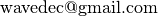

Sensor placement for the analysis of seismic surface waves¶
Sensor placement is in general a really hard problem. It is difficult to obtain optimal array geometries. However it is possible to find very good array geometries. Here is a Python implementation of the algorithm presented in
Stefano Maranò, Donat Fäh, and Yue M. Lu, “Sensor Placement for the Analysis of Seismic Surface Waves: Sources of Error, Design Criterion and Array Design Algorithms”, Geophys. J. Int. (2014) 197 (3): 1566–1581. Free access online, doi:10.1093/gji/ggt489.
In the proposed work, the sensor placement problem is addressed as a mixed integer program. The proposed array design technique was developed for usage in seismology. Two-dimensional arrays for other applications, including acoustic and radar, may also be designed.
The algorithm was developed at the Swiss Seismological Service of ETH Zurich.
Note
The Python code is working but I am aware that some features are not polished. Please feel to contact me if there is anything you wish to discuss or improve .